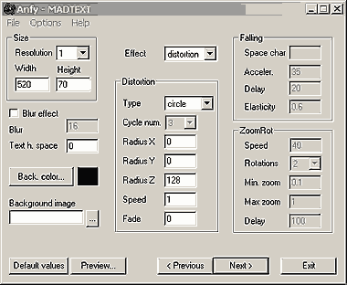

|
This applet displays a scrolling text, using colored fonts. There
are some effects available, including falling, distortion, zoom
rotator and blur effect. Since this applet uses AFT font, only the
characters in the font will be displayed. Visit here
for more detail about AFT.
[For more technical
information about the available parameters, click here.]
Most parameters are self-explanatory and you can
always see brief description of each parameter by moving the mouse
pointer over the wizard.

Basic Setting
Define the Width and Height of the applet,
and select the Resolution value, which works as a zoomign
factor. For the best result, use resolution = 1. Select either Background
Color or Background Image in the respective fields. Optionally,
there's a Blur Effect switch. If you check it, you need to
set the Blur Intensity value from [0, 256]. Lower values
gives soft and more propagated blurring, higher values gives stronger
decadence of color, fading to black sooner. Next, set the Text
Horizontal Spacing value, which defines the spacing between
letters.
Apart from blur, there are three effects selectable
in Effect pull-down menu.
Falling Effect
If you choose falling effcet, first, you need to specify
the Space Character which will complete the line of falling
letters if your strings are too short. Then, give a value from [1,
256] to Accelaration of the falling movement. At Delay
box, you specify the number of frames during which the strings
will be displayed after all the letters reached the bottom. The
value for Elasticity parameter [0.0, 1.0] controls the way
ground reacts when letters falls on. Set this value near 1 for a
bouncy ground.
Distortion Effect
There are three Types of distortion paths:
"sin" = 3D sinusoidal scroll,
"spiral" = 3D spiral scroll,
"circle" = 3D circle scroll.
If your choice is spiral or circle, you can use the
background image and background color to create an effect of plane
with letters around it or similiar. In the background image you
have to fill the area you want to be transparent with the color
specified in "bgcolor" parameter. If your choice is circle,
set Radiux X, Y and Z values. If your choice is spiral,
Radius Z value is ignored, whereas with sin option, the Radius
Y value is absent. Set the Number of Cycles from [0,
8], however, if your choice is circle, this value has no effect.
With Speed parameter, you can set the speed of the scrolling.
For left to right, or up to down scrolling set speed > 0. For
right to left, or down to up scrolling set speed < 0. To calibrate
speed, consider that speed="8" scrolls 1 pixel per frame.
Finally, Fade value controls the fading of background letters,
and takes a value from [0, 255].
Zoom Rotation Effect
Specify the Rotation Speed and the Number of Rotation.
You could set Minimum and Maximum Zoom values. The value
for Delay parameter represents the number of frames displayed
after the zoom and rotation is performed.
When you click the "Next >" button, you will
see the Text entering box, and Anfy Font Property. Enter your choice
of text directly, or import the text content from a file. Anfy Font
can be obtained from http://www.anfyteam.com/aft/.
Now, proceed to the expert
menu.
|